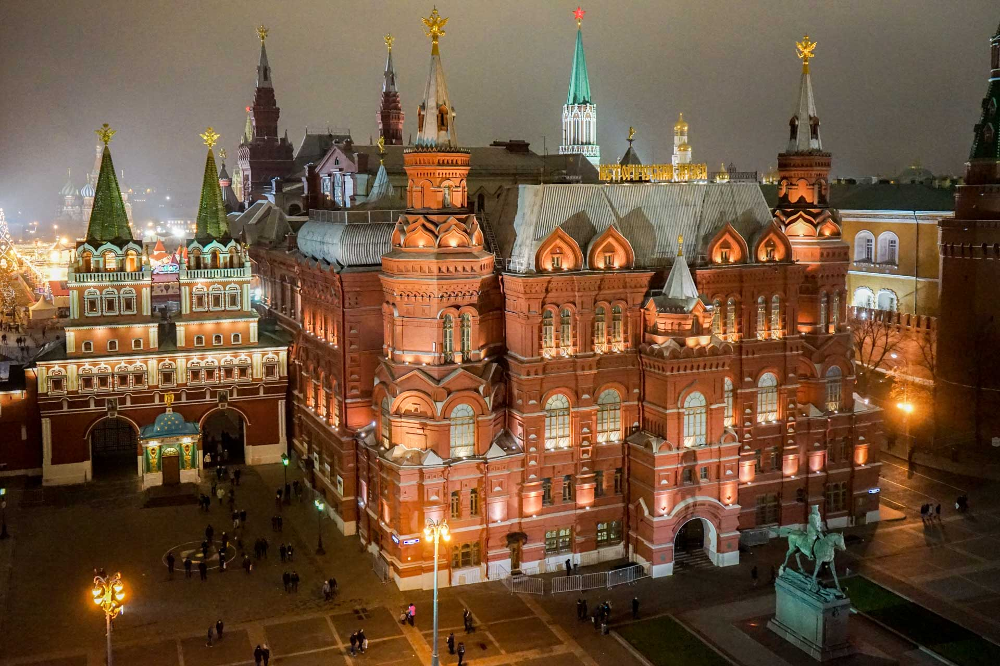

Moscou, la capitale de la Russie, est une ville vibrante imprégnée d'histoire, renommée pour ses monuments emblématiques
tels que le Kremlin et la Place Rouge, ainsi que pour sa vie culturelle animée et son architecture grandiose.

Les lumières chatoyantes illuminent les bâtiments emblématiques de la ville, créant une atmosphère magique. Parmi les structures
visibles, on peut identifier la tour de télévision Ostankino, haute de 540 mètres, qui offre une vue imprenable sur la ville.
La rivière Moskova serpente à travers la ville, reflétant les lumières et ajoutant une touche de sérénité à l’ensemble.
Note: Pour une expérience encore plus immersive, je vous invite à visiter Moscou en personne et à admirer cette vue depuis
les rives de la rivière ou depuis l’un des nombreux points d’observation de la ville
La Place de la Cathédrale et le Grand Palais du Kremlin sont des joyaux architecturaux situés au cœur de Moscou. La Place de la
Cathédrale, entourée de bâtiments historiques, est un lieu emblématique où se trouvent les célèbres cathédrales orthodoxes russes.
Le Grand Palais du Kremlin, quant à lui, est un exemple impressionnant de l’architecture russe, avec ses dômes dorés et ses murs
imposants. Ces monuments témoignent de la richesse culturelle et historique de la Russie.